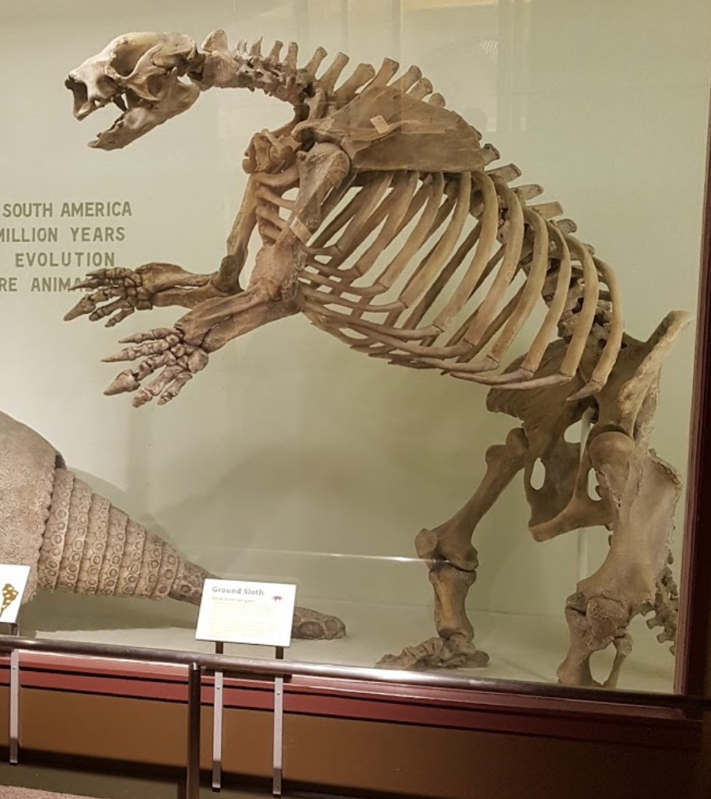
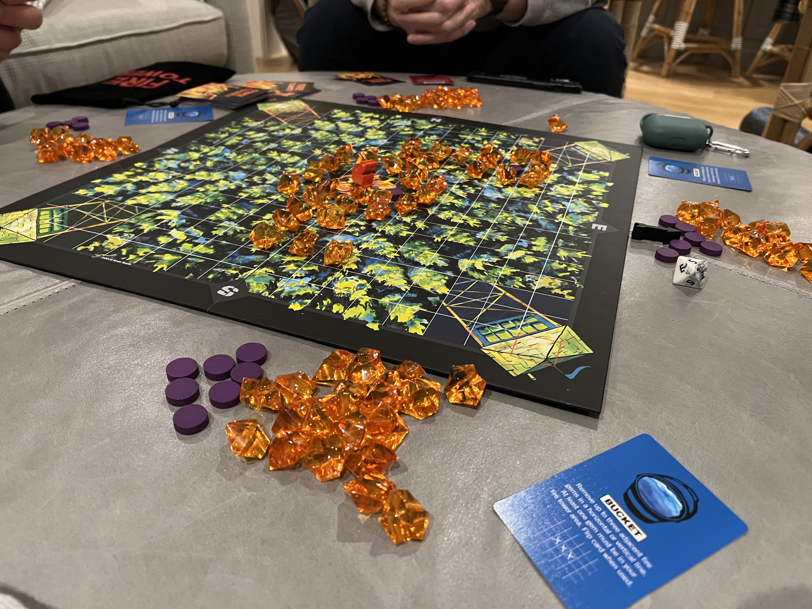
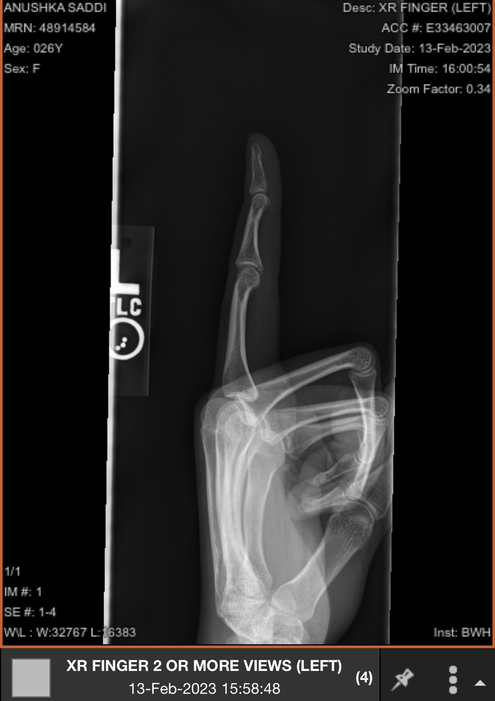
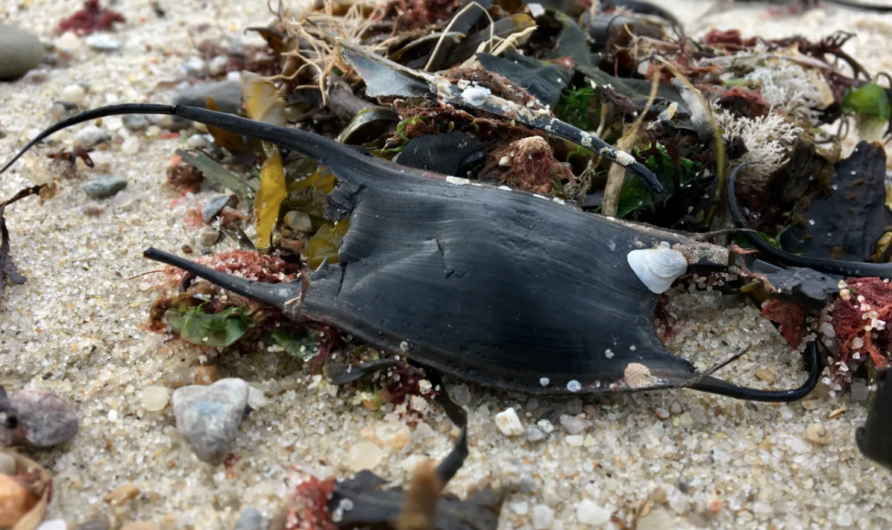

Thursday, March 2nd
Approximately 80% of the people I shared my last list of 10 things with have watched Ron’s Gone Wrong and that has been motivation enough for me to continue to share my consumption.
This month’s list covers some of my most fascinating and enjoyable February experiences.
- The Ground Sloth - I have a lukewarm attitude toward most museums but any place with big mammals, dinosaurs, or anything related to Ancient Egypt is generally a big hit (Middle school history class was a formative experience for me). I came across this massive, freakish mammal at the Harvard Museum of Natural History. The Ground Sloth evolved 35 million years ago in South America. This frightening animal is the product of evolution in South America during its period of isolation as a continent. 
- The song All The Debts I Owe by Caamp. I was iffy at first but you can’t say no to some good banjo.
- For lack of a better name- the game - 50 states in 6 minutes. The goal is to write down as many states as you can in 6 minutes. I attempted this for three consecutive days with the same group of friends and ¾ of us have yet to hit all 50 states. Bets were made, money was lost, and Iowa and Oklahoma now have a special place in my heart.
- In a desperate attempt to make my Youtube addiction feel like a productive and educational experience, I’ve subscribed to the Kings and Generals channel. I’d recommend this channel to anyone mildly interested in history or anyone embarrassed by their lack of knowledge on historical events that aren’t the Revolutionary or Civil War. I’d consider the videos comparable to a series of less interesting Avatar: The Last Airbender episodes.
- Fire Tower- This board game combines various components of card games, chess, nature, art, and the thrill of arson all into one ~30 minute immersive experience. The premise is that every player defends their fire tower from a raging forest fire that is spreading with the wind, and growing more dangerous with each card played by an opponent in hopes to be the last man standing. The game rules and restrictions can also be easily altered to make play much more aggressive or tame. 
- The Namesake by Jhumpa Lahiri- I read this book based on a recommendation from a friend- one that I would now echo strongly. This story shares the immigrant experience of an Indian family that has relocated to Boston, Massachusetts. It uses unique character stories to dissect themes of identity, tradition, and independence. My main attraction to this book is that it brings up a lot of interesting conversation topics and character analysis to unpack with friends- a strong book club candidate!
- A conversation I had with a friend about how men and women consider the financial status of a potential partner. The idea was that men assume they have the responsibility of being the main financial provider and so a woman's earning potential is not really a swaying factor. While for women, the earning potential of a partner is more likely to have an influence regardless of their own financial status. I wasn’t sure exactly what I thought of this and so the conversation stood out. Please weigh in with your thoughts. (I found this article in the NY Times that is somewhat related- I don’t love it completely but it is an interesting read and cites a few thought provoking studies.)
- Avulsion Fractures- I fractured my left index finger playing volleyball at the end of January. For my most dramatic self, it has been annoying and expensive and I blame the girl who served the ball at me. Otherwise it's been a chance to increase my medical knowledge from a source that isn't Scrubs or House. (Grey’s Anatomy is not a reliable source). An avulsion fracture is where a small piece of bone attached to a tendon or ligament gets pulled away from the main part of the bone. 
- I spent last week at the Cape (of Cod) and learned that the black leathery looking plastic pieces washed up on shores are actually shark and ray eggs (more cutely known as mermaid purses). Sharks are more exciting than rays, so I went down that rabbit hole. Most sharks give birth to live young, but some species lay eggs on the seafloor and in coral and seaweed. The shark develops in the 'mermaid purse' for up to 15 months and then comes out ready to survive on its own. I will be telling everyone that I found a shark egg even though it is quite likely that the egg shell is from the ray family. :/ 
- I saw Maggie Rogers on her Feral Joy Tour in Boston. I had so many thoughts on this experience.
- Feral Joy is a great name for a music tour.
- I like her old sound (Heard It in a Past Life) better than her new sound (Surrender)
- I sometimes feel like I have more cathartic music listening experiences with my airpods rather than in concert. Is this normal or do I not love Maggie Rogers enough?
- Where you stand at a concert has too much of an influence on how much you enjoy the experience.
- Alaska and That's Where I Am are both bangers with great music videos.
- Maggie has a great voice.
This picture is from google because all the ones on my phone have Jason imitating a ground sloth in them.
Beautiful fire gems
OFFICIAL BOOK REVIEW: Lahiri's writing style in the Namesake is very matter of fact and, at the same time, very engaging. All of her characters have some trait that makes them relatable but flawed. I thoroughly enjoyed the first half of the book but did feel something lacking by the end. The novelty and simplicity of her writing style wear off a bit as the story continues and the plot line starts to dull. By the end, I felt certain storylines didn’t live up to their full potential and the book did not end quite as strong as it started. (4/5 stars)
A tiny avulsion fracture for the price of $900 dollars
A mermaid purse
~~Stay feral~~